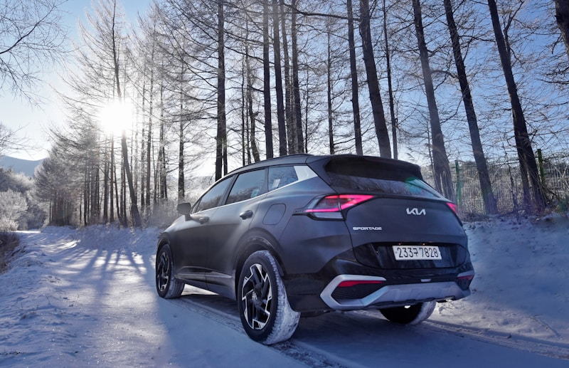

Kia Repair & Service in Cedar Rapids
Factory-trained techniques, independent shop pricing.
Expert Kia Service in Cedar Rapids
Cedar Automotive is Cedar Rapids' go-to independent shop for Kia repair and maintenance. Whether you drive a Forte, Sportage, Sorento, Telluride, Soul, or K5, our technicians know these vehicles inside and out. We use factory-spec procedures and quality parts to keep your Kia running at its best — all without the dealership markup.
Kia vehicles are known for their value and long warranty coverage, but they still need expert maintenance once that warranty expires. From routine oil changes to diagnosing check engine lights, we provide the same level of care you'd expect from the dealer — faster, more affordable, and with honest communication every step of the way.
Located near the Cedar Rapids Regional Airport, we make it easy to drop off your Kia and get back to your day. Most services are completed same-day, and we always provide a clear estimate before turning a single wrench.
Kia Services We Provide
- Oil changes and fluid services (synthetic and conventional)
- Brake pad replacement, rotor resurfacing, and brake system repair
- Engine diagnostics, repair, and Theta II engine service
- DCT (dual-clutch transmission) and automatic transmission service
- Electrical system diagnostics and battery service
- Suspension and steering repair
- AC and heating system service
- Timing chain inspection and replacement
- Car key and key fob programming

Why Choose Cedar Automotive for Your Kia?
Kia-Specific Knowledge
We stay current on Kia technical service bulletins, recalls, and common failure patterns so your vehicle gets the right fix the first time.
Below-Dealer Pricing
Quality Kia repair without the dealership price tag. We use OE-quality parts and provide transparent estimates before any work begins.
Same-Day Turnaround
Most Kia maintenance and repair appointments are completed the same day. Drop off in the morning, drive home by afternoon.
Common Kia Issues We Fix
Engine Bearing Failure (Theta II / GDI)
Many Kia models equipped with the 2.0L and 2.4L Theta II GDI engines are prone to connecting rod bearing failure due to metal debris in the oil passages. Symptoms include engine knocking, oil consumption, and eventual seizure. We perform the factory-recommended inspection and repair these engines before catastrophic failure occurs.
DCT Clutch Shudder
Kia models with the 7-speed dual-clutch transmission (DCT) — especially the Forte — can develop a noticeable shudder or hesitation at low speeds. This is typically caused by clutch pack wear or contaminated transmission fluid. We diagnose and service DCT units to restore smooth shifting.
Catalytic Converter Theft
Kia SUVs and sedans have become frequent targets for catalytic converter theft due to their ground clearance and precious metal content. If your catalytic converter has been stolen, we can install a quality replacement and get you back on the road quickly.
AC Compressor Failure
Kia AC compressors — particularly on the Sportage and Sorento — can fail prematurely, resulting in warm air from the vents and unusual noises when the AC engages. We diagnose the system, replace the compressor, and recharge the refrigerant to full capacity.
Paint Peeling & Clear Coat Issues
Some Kia models experience premature paint peeling, bubbling, or clear coat failure — especially on the roof and hood. While we focus on mechanical repair, we can advise you on next steps and address any underlying rust or corrosion that may be present.
Starter Motor Failure
Kia starters can wear out prematurely, especially on higher-mileage Forte and Soul models. If your Kia is slow to crank or clicks without starting, we test the starter circuit and replace the unit with an OE-quality part.
Related Services
Frequently Asked Questions
Does Cedar Automotive work on all Kia models?
Yes. We service every Kia model, including the Forte, Sportage, Sorento, Telluride, Soul, K5, and more. From routine oil changes to complex engine and DCT transmission repairs, we handle it all.
Is my Kia affected by the Theta II engine recall?
Many 2011-2019 Kia models with Theta II GDI engines are affected by engine bearing and seizure recalls. We can inspect your engine, perform the recommended diagnostic tests, and carry out any needed repairs — without the long dealership wait.
How much does Kia repair cost at Cedar Automotive?
Costs vary depending on the repair, but we always provide an upfront estimate before work begins. Our rates are competitive with or below dealership pricing, and there are no surprise charges on your bill. Call (319) 450-7584 for a quote.
Do you program Kia keys and fobs?
Yes — we program Kia keys and key fobs for all models including Sportage, Sorento, Forte, K5, and Telluride. We handle transponder keys, proximity fobs, and all-keys-lost programming — typically saving you hundreds compared to the dealer. Call (319) 450-7584 for a quote.